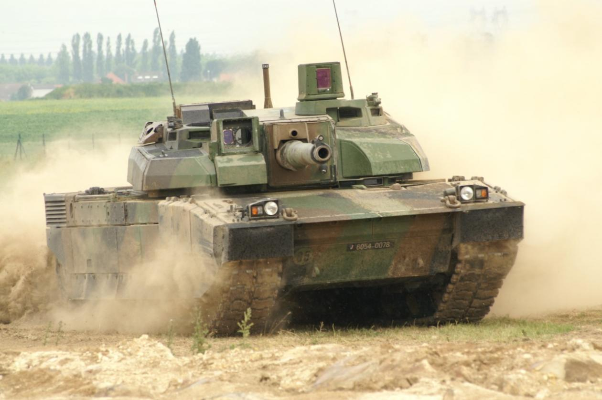
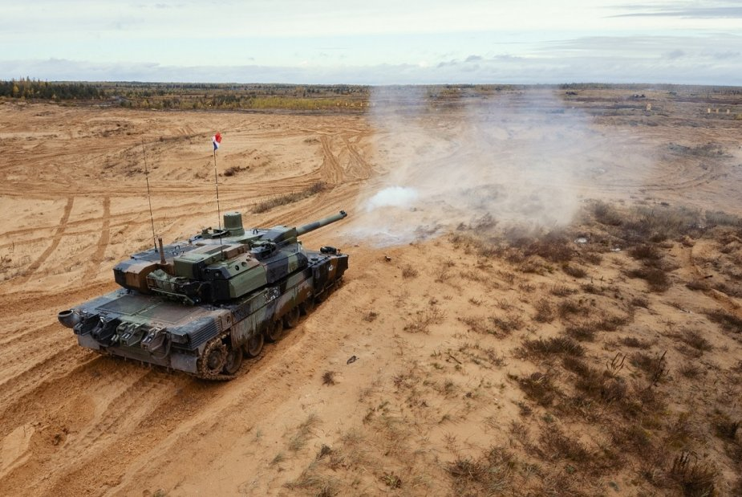
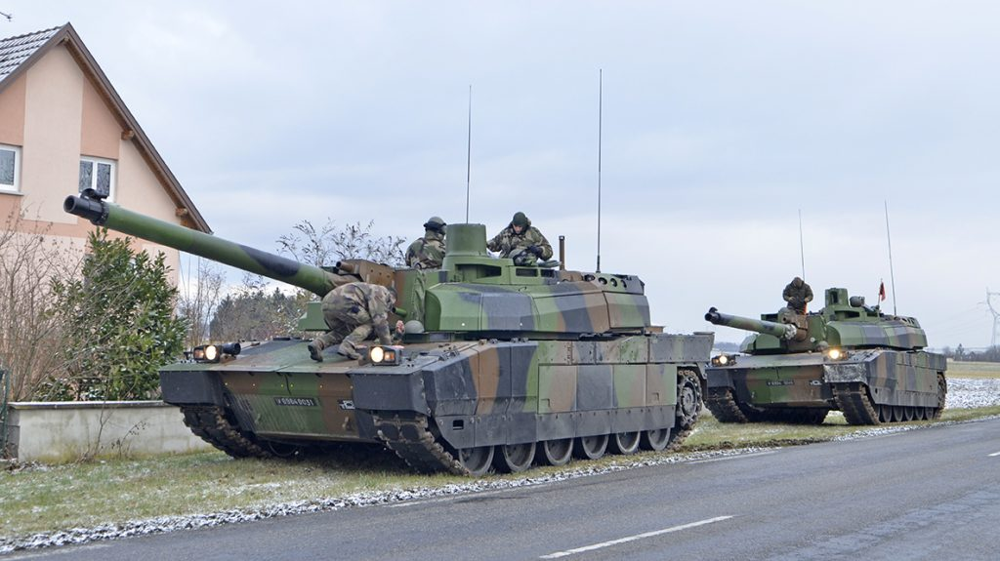
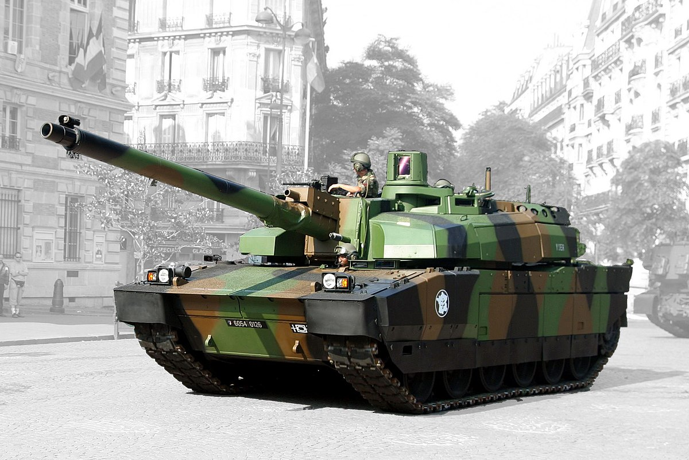
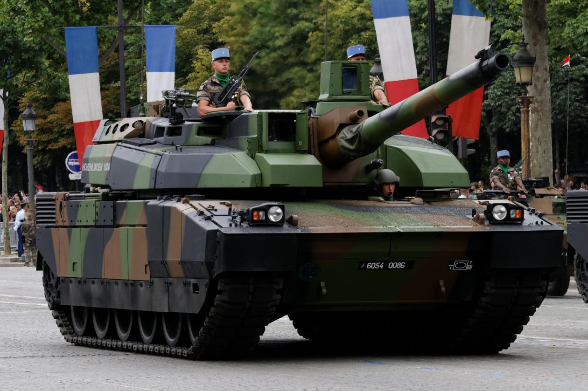
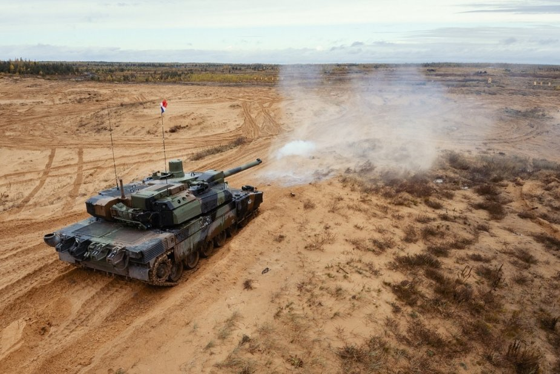
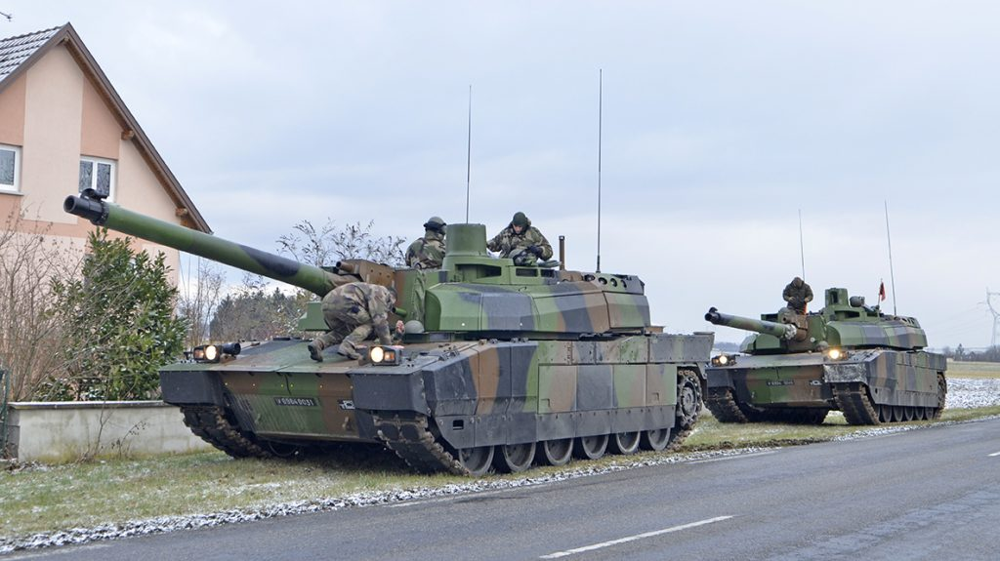
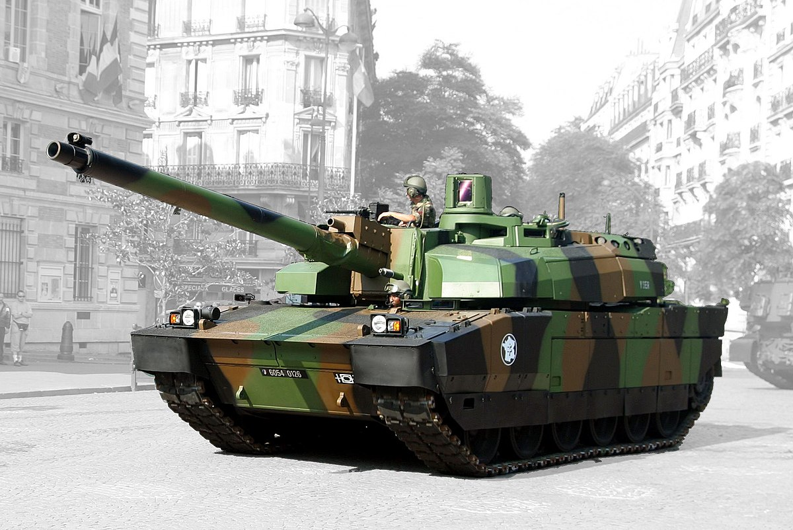
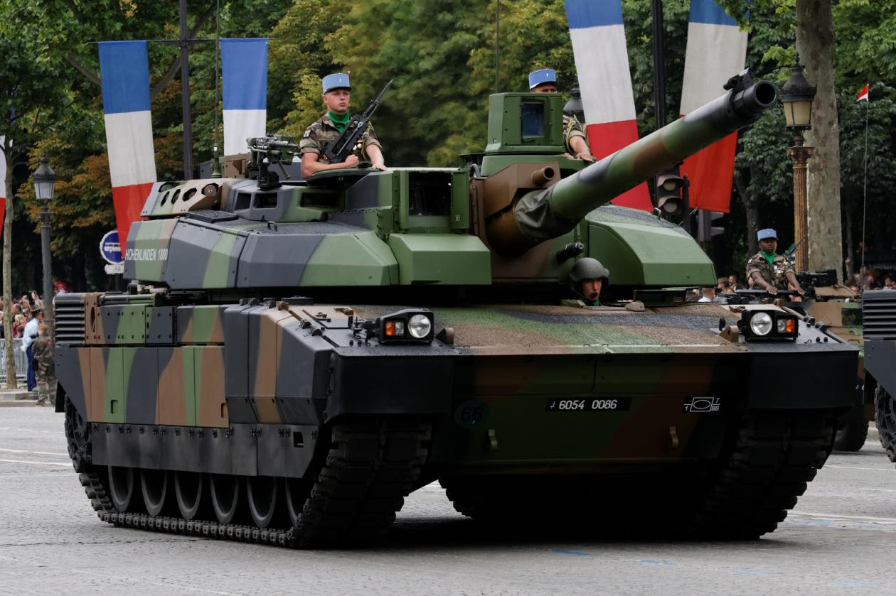

NEWS





France's Leclerc Tank: One of the Best on the Planet?
French-built, Emirati-modified.More ...

Lynx 6: Victory of Leclerc tank at NATO combined exercise Iron Spear
From 7 to 13 October, at the Adazi camp in Latvia, the French tank crewmen of the Lynx 6 Tactical Inter-Service Sub-Group (Sous-Groupement Tactique Interarmes, S-GTIA) participated in an inter-alliance exercise gathering the battle tanks of eight nations taking part to the enhanced Forward Presence (eFP).More ...

Leclerc tanks and VBCI APCs exercise in Alsace in freezing temperatures
If they were common place during the cold war, seasonal open field tank maneuvers are very rare nowadays in France, mainly due to almost permanent on-going expeditionary operations in Africa and the Middle-East which place the land forces under a severely constrained budget More ...

European Main Battle Tank: France and Germany's New Joint Super Weapon?
What happens when German and French tanks mate?More ...

One Tough Tank: Why France's Leclerc Is One of the Best on the Planet
Why "Little Sparta" loves these tanks in battle. More ...